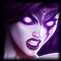

Intermediate Champions
So you've got a few matches under your belt and have got the basic mechanics of the game down. Now you want to learn more strategies and build on those basic skills. This next set of champions does just that. These champions use abilities that are a bit more complex then the previous tier, and most of them depend on items with active abilities. They rely on the player being able to quickly enter button commands and read a situation quickly. As with the list before these are not the only champions that you can play. This list is just meant to get you started quickly with champions who require a bit more skill to fully master. So let's get started!
| Champion | Pros | Cons | |
 |
Brand - The Burning Vengeance |
|
|
 |
Katarina - The Sinister Blade |
|
|
|  | Morgana - The Fallen Angel |
|
|
Brand - The Burning Vengeance

About Brand
Brand is a character who is meant to get in, do massive damage with all his abilities, and back out of the fight until his abilities come off of cooldown. His moves all do massive damage, at the expense of lengthy cooldowns and high mana costs. Also his passive allows all his moves to combo together, in order to produce increased effects. Play Brand cautiously as most players will focus you down in a teamfight, and you won't be able to survive their burst damage.
Abilities
Passive: Blaze - Brand's spells light his target on fire, dealing a percentage of their maximum health as
damage over time. If Brand uses a spell against someone who is ablaze, that spell will have an increased effect.
Q: Sear - Brand launches a fireball at a target, dealing magic damage. If the target is ablaze, Sear will also
stun the target. This move is a short range skillshot, that hits the first enemy unit in your path. The stun it causes on
targets who are ablaze is a great setup for the rest of your combo, or for setting up ganks for your jungler. Use the stun
effect when you need to stun and damage a single target. The combo of E+Q+W, will quickly stun a target and set him up for
extra damage with the W.
W: Pillar of Flame - Brand burns an area of the ground that he targets after a short delay period. Units that are
ablaze take additional damage. This move is your AoE damage dealer and wave pusher. If used on a target who is ablaze, it
really pumps out the damage and is a disrupter in teamfights. Use the combo of Q+E+W, to burst a group of enemies quickly.
Blaze will get spread due to the Q+E portion, and then the W will do extra damage to foes caught in the blast.
E: Conflagration - Brand blasts his target with fire, which does a good amount of magic damage. If the target is
ablaze, Conflagration spreads to nearby enemies. This move is tricky to use, but is mostly used as a combo enhancer to spread
Blaze to multiple enemies so that you can further your combo. That being said, don't forget about the decent damage is does.
Use it to either assist with the stun on the Q or the bonus damage on the W, to maximize its effectiveness.
R: Pyroclasm - Brand unleashes a powerful blast of fire, dealing magic damage and bouncing to targets. If the target is
ablaze, then Pyroclast will prioritize champions for the next bounce. This move does insane damage and can really spread the pain
quickly if your targets are ablaze. It should rarely be used as the start of a combo, and finds its uses mostly in the middle or
the end of a combo.
Items
 Doran's ring grants 15 AP, 60 Health, 3 Mana Regen per 5 seconds and has a passive effect of restoring 4 mana when an
enemy is killed. Start with this item and some health potions. This item will help alleviate some of the early mana problems that
Brand suffers from, while greatly increasing his overall damage.
Doran's ring grants 15 AP, 60 Health, 3 Mana Regen per 5 seconds and has a passive effect of restoring 4 mana when an
enemy is killed. Start with this item and some health potions. This item will help alleviate some of the early mana problems that
Brand suffers from, while greatly increasing his overall damage.
 Zhonya's Hourglass grants 120 AP, 50 Armor, and an amazing active ability. If you activate the item, it puts your champion into
a stasis, where he becomes invulnerable to damage and untargetable by spells. This item provides Brand with a high amount of AP
coupled with some much needed defensive stats in armor. Not only that, but the active ability will keep you alive while you wait
for your Pyroclasm to destroy the enemy team.
Zhonya's Hourglass grants 120 AP, 50 Armor, and an amazing active ability. If you activate the item, it puts your champion into
a stasis, where he becomes invulnerable to damage and untargetable by spells. This item provides Brand with a high amount of AP
coupled with some much needed defensive stats in armor. Not only that, but the active ability will keep you alive while you wait
for your Pyroclasm to destroy the enemy team.
 Deathfire Grasp, once again, is an advanced item which grants 120 AP, 10% Cooldown Reduction, and has a unique Active ability. The ability
deals a large amount of magic damage to the target, and applies a debuff which causes the target to take even more magic damage.
This ability is what makes the item advanced. If you remember to use it, you'll see a dramatic increase in your damage and production.
Back to top
Deathfire Grasp, once again, is an advanced item which grants 120 AP, 10% Cooldown Reduction, and has a unique Active ability. The ability
deals a large amount of magic damage to the target, and applies a debuff which causes the target to take even more magic damage.
This ability is what makes the item advanced. If you remember to use it, you'll see a dramatic increase in your damage and production.
Back to top
Katarina - The Sinister Blade
About Katarina
Katarina is an interesting character to play, as she is a melee character with some advanced mechanics that will really enhance your game. Her Shunpo ability will teach players the value of proper positioning, as well as the importance of Sight Wards. Her ultimate is well known and properly feared throughout the community, and using on the enemy is very satisfying. Use Katarina with cation, because not only is she squishy, but she does not have any real built in escapes once her Shunpo is on cooldown. Excellent Katarina players will learn to master the Shunpo ability.
Abilities
Passive: Voracity - Champion kills or assists reduce Katarina's cooldowns by 15 seconds. The passive really compliments
Katarina's Shunpo to the middle of the team, Death Lotus everyone around you combination. If you get a kill or assist, the cooldown
on all your moves outside of Death Lotus will be instantly refreshed. It makes spamming abilities quite possible.
Q: Bouncing Blades - Katarina throws a dagger that bounses from enemy to enemy, dealing magic damage and marking them. Katarina's
next spell or attack against a marked target consumes the mark and deals extra damage. This is her only form of poke, and thankfully
it's fairly reliable. It sets up some quick extra damage by marking a target, which you can Shunpo to.
W: Sinister Steel - Katarina deals AoE damage around her to all enemies. If she hits an enemy Champion, she gains a small
burst of speed for a short time. Use this move after you Shunpo, to either quickly escape or continue the pursuit. The main use of
this ability is for the speed bonus, not so much the damage.
E: Shunpo - Katarina instantly moves to her target's location, and takes reduced damage for a few seconds. If the target
is an enemy, she deals damage. Her bread and butter move. Shunpo can teleport you to any target on the map, whether friend or foe.
Use it to get into a teamfight and use Death Lotus. Use it to teleport to your target, and use her W to either keep pressing or
escape. Tne best thing is that Shunpo can teleport to friendly and enemy wards, in addition to the other targets. With this in mind,
it's even more important to carry a ward in your pocket so that you can escape over the walls of the map by placing and Shunpo-ing
to it.
R: Death Lotus - Katarina rapidly throws daggers to the three nearest champions, with no single champion being hit by more than
10 daggers. This move hurts like heck. Once you Shunpo to a target and get that damage resistance, you want to Death Lotus so that you
can increase your durability for the duration of the ability.
Items
 Boots of Speed grants as movement speed bonus of 25. This is important for Katarina players, as her gameplay revolves around quickly
getting in, dishing some quick damage, and getting out before the enemy can retaliate. Start with these boots and some health potions
to increase your early game sustain and mobility.
Boots of Speed grants as movement speed bonus of 25. This is important for Katarina players, as her gameplay revolves around quickly
getting in, dishing some quick damage, and getting out before the enemy can retaliate. Start with these boots and some health potions
to increase your early game sustain and mobility.
Zhonya's Hourglass grants 120 AP, 50 Armor, and an amazing active ability. If you activate the item, it puts your champion into
a stasis, where he becomes invulnerable to damage and untargetable by spells. The active on this item is excellent in the middle of
Death Lotus, to sort of trick the enemies into attacking you. Once they burn their long cooldowns trying to stop your death lotus, your
teammates should have no problem taking them out. Your passive should quickly bring Death Lotus back off cooldown as well.
 Rylai's Crystal Scepter grants 80 AP and 500 health. It also has a passive ability, that when you deal spell damage to a target, you slow
the target's movement speed. This item naturally fits Katarina's playstyle, as all of her abilities deal magic damage and she is reliant on
either getting away from or sticking to the enemy. This item will also keep enemies within the range of your Death Lotus for longer as well.
Back to top
Rylai's Crystal Scepter grants 80 AP and 500 health. It also has a passive ability, that when you deal spell damage to a target, you slow
the target's movement speed. This item naturally fits Katarina's playstyle, as all of her abilities deal magic damage and she is reliant on
either getting away from or sticking to the enemy. This item will also keep enemies within the range of your Death Lotus for longer as well.
Back to top
Morgana - The Fallen Angel

About Morgana
Morgana is the total package. She's got a root that has a long duration, an excellent AoE waveclear, an amazing spell shield that stops ALL forms of CC, and her ultimate itself has two forms of CC encompassed in it. She can lane against most champions and most champions have difficulty laning against her. Her moves are not too difficult to learn, but her combo relies on players landing her skillshot Q, which may take some practice. Also, elite players will learn to use her shield often, as the benefit of being immune to CC is too much to pass up.
Abilities
Passive: Soul Siphon - Morgana gains spell vamp, which heals her whenever she deals spell damage. This passive
grants Morgana some nice sustain, allowing her to stay in lane for longer periods of time. If you find yourself needed to
heal, go to a minion wave and drop your W on as many as possible and watch your health sky rocket to full.
Q: Dark Binding - Morgana fires a sphere of dark energy, that makes contact with and roots the first enemy it hits.
This ability is a long range skillshot, and the projectile travels very slowly, so it's easy to dodge. Which is unfortunate,
because Morgana's combos depend on landing the Q. Make sure you properly lead your target before firing off the Binding.
W: Tormented Soil - Morgana drops a pool of desecrated soil on an area, dealing damage to enemy units who stand in it.
This ability does damage based off of the percent of the targets maximum health missing. It is an excellent form of waive clear,
that can clear out minion waves at early levels.
E: Black Shield - Morgana shields herself or an ally from magical damage and prevents any forms of CC while the shield
persists. This ability is a life saver on so many levels. It saves you from magic damage and prevents you from being slowed,
snared or stunned. As long as your shield is off cooldown, you have nothing to fear from most junglers so you can mostly push at
will. Remember, this move can be casted on an ally, so that they get the full benefit of it too.
R: Soul Shackles - Morgana latches onto nearby enemy champions, dealing damage and reducing their movement speed. If the
enemies don't break the tether, they take the same amount of damage as before and are stunned for a few seconds. Morgana's ultimate
can latch on to all five enemy champions, which is what you want to aim to do most of the time. This is one of the reasons that most
Morgana players will build tanky, so that they can survive the damage to get into the middle of the enemy team so they can use their
Soul Shackles. The best thing about this ability is the secondary stun effect, so you want to pick a target and stick close to him so
that they can be fully stunned.
New Player Video
Below is a video detailing the mechanics behind Morgana's amazing moveset.
**This is not my video. This video was created and uploaded to YouTube by Ciderhelm**
Items
Doran's ring grants 15 AP, 60 Health, 3 Mana Regen per 5 seconds and has a passive effect of restoring 4 mana when an
enemy is killed. Start with this item and some health potions. This item provides all the stats you need at level 1 and can increase
your early game by giving you bonuses to AP and mana regen. Start with this item and potions and prepare to stay in lane forever if
you do not play too aggressively. The mana regen from this coupled with the health regen from her passive allows you to safely farm
forever.
 Rod of Ages grants 450 health, 450 mana, and 60 ability power. It also has two passive abilities. The first passive ability increases
the bonus health, mana and AP the item gives as the match goes on, up to a certain cap. The second passive heals the health and mana of
the person who has the item each time they level. It's a good item to be rushed on Morgana, to give her the extra damage and sustain she
needs. In addition to that, the extra health makes her that much tankier.
Rod of Ages grants 450 health, 450 mana, and 60 ability power. It also has two passive abilities. The first passive ability increases
the bonus health, mana and AP the item gives as the match goes on, up to a certain cap. The second passive heals the health and mana of
the person who has the item each time they level. It's a good item to be rushed on Morgana, to give her the extra damage and sustain she
needs. In addition to that, the extra health makes her that much tankier.
See the pattern here? Zhonya's Hourglass grants 120 AP, 50 Armor, and an amazing active ability. If you activate the item, it puts your champion into
a stasis, where he becomes invulnerable to damage and untargetable by spells. This item is important on Morgana, because you can use your Soul Shackles
to begin the timer on the leash's stun, and then use the active to prevent enemies from focusing you down. This strategy will nearly always result in you getting a stun on a prioriy target.
Back to top
So there you have it. Once again, this list is not the complete exhaustive list on intermediate players, but it provides some slightly challenging champions who have more to offer for a team. Once you get the mechanics of these characters down, it'll be time to move to the more complicated champions to play. Learning these champions should dramatically increase your gameplay at all stages of the game, but most specifically in the teamfight phase. All these champions require a good knowledge of positioning, which will go a long way in your League of Legends career.